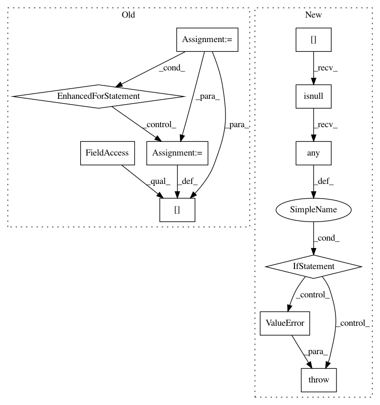

970491cd9b3cb21b043c22b50b4d09f9dd2481a7,category_encoders/woe.py,WOEEncoder,_score,#WOEEncoder#Any#Any#,256
Before Change
// Score the column
transformed_column = pd.Series([np.nan] * X.shape[0], name=column)
for val in switch.get("woe"):
transformed_column.loc[X[column] == val] = switch.get("woe")[val] // THIS LINE IS SLOW
// Replace missing values only in the computed columns
if self.impute_missing:
if self.handle_unknown == "impute":
transformed_column.fillna(0, inplace=True)
elif self.handle_unknown == "error":
After Change
if self.handle_unknown == "impute":
X[col].fillna(0, inplace=True)
elif self.handle_unknown == "error":
if X[col].isnull().any():
raise ValueError("Unexpected categories found in column %s" % col)
// Randomization is meaningful only for training data -> we do it only if y is present
if self.randomized and y is not None:
random_state_generator = check_random_state(self.random_state)
X[col] = (X[col] * random_state_generator.normal(1., self.sigma, X[col].shape[0]))
In pattern: SUPERPATTERN
Frequency: 3
Non-data size: 11
Instances
Project Name: scikit-learn-contrib/categorical-encoding
Commit Name: 970491cd9b3cb21b043c22b50b4d09f9dd2481a7
Time: 2018-10-19
Author: jan@motl.us
File Name: category_encoders/woe.py
Class Name: WOEEncoder
Method Name: _score
Project Name: scikit-learn-contrib/categorical-encoding
Commit Name: 3526a6d7d5005d0cb126a39c894ad7f46b441260
Time: 2018-11-17
Author: jcastaldo08@gmail.com
File Name: category_encoders/basen.py
Class Name: BaseNEncoder
Method Name: fit
Project Name: scikit-learn-contrib/categorical-encoding
Commit Name: 3526a6d7d5005d0cb126a39c894ad7f46b441260
Time: 2018-11-17
Author: jcastaldo08@gmail.com
File Name: category_encoders/binary.py
Class Name: BinaryEncoder
Method Name: fit